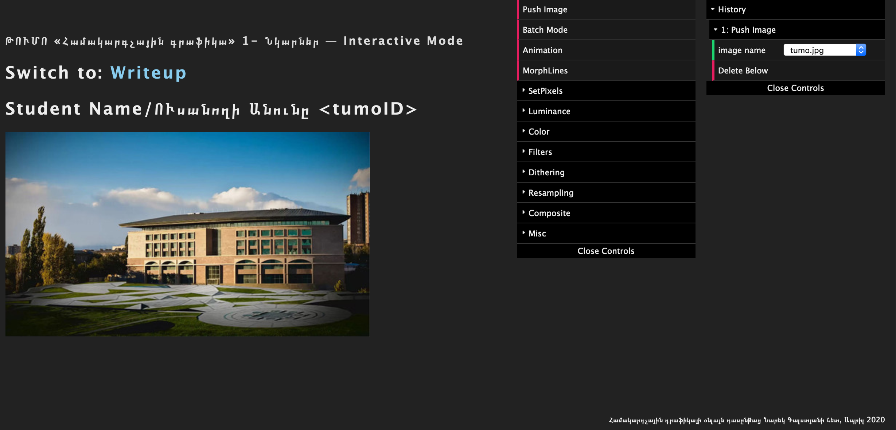
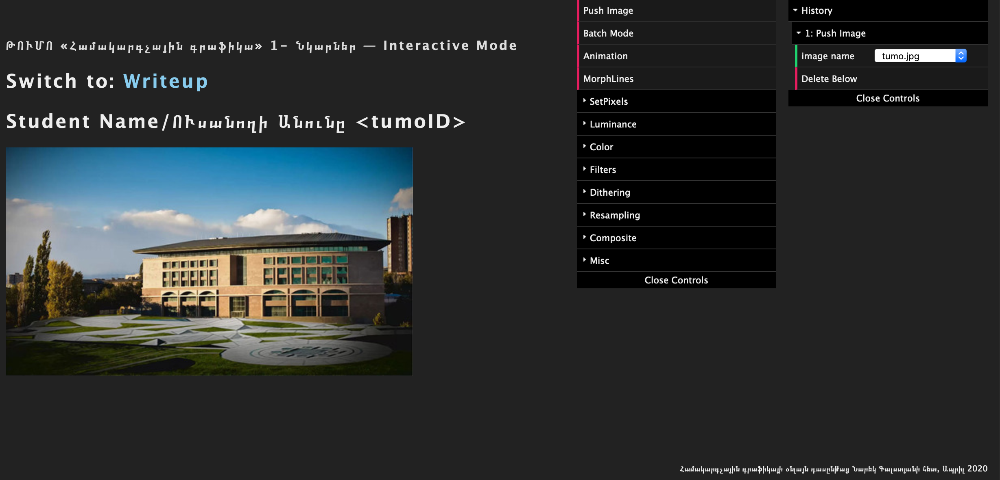

ԹՈՒՄՈ «Համակարգչային գրաֆիկա» 1- Նկարներ
Դասընթացում ուսումնասիրելու ենք համակարգչային գրաֆիկայի մի շարք գործիքներ ու դրանցից շատերը ծրագրավորելու ենք մեր ձեռքով։ Աշխատանքային լեզում Ջավասկրիպտն է։
Մինչ սկսելն անհրաժեշտ է որ դուք(դասընթացի մասնակիցներդ) Ձեր համակարգիչներում անհրաժեշտ գործիքներն ունենաք։
Ստեղծենք աշխատանքային միջավայր
Ինչպես գիտեք, Ջավասկրիպտն աշխատում է ինտերնետ դիտարկիչի մեջ այսինքն հավելյալ ծրագիր անհրաժեշտ չէ Ջավասկրիպտն աշխատացնելու համար։
Այնուամենայնիվ, մեզ անհրաժեշտ գործիքների առանձնահատկություններից ելնելով, մեզ անհրաժեշտ է ունենալ python։
Եթե ձեր համակարգչում python արդեն տեղադրված է, հավելյալ ներբեռնելու ու տեղադրելու կարիք չկա։ Հակառակ դեպքում, այն կարող եք ներբեռնել
այստեղից:
Մեզ նաեւ անհրաժեշտ է որեւէ տեքստային խմբագրիչ։ Կարող եք օգտագործել ցանկացած խմբագրիչ որը նախկինում օգտագործել եք Ջավասկրիպտով աշխատելիս։ Օրինակ՝
Sublime Text, VSCode,
Atom
Ներբեռնենք անհրաժեշտ ֆայլերը
- Այստեղից ներբեռնեք ողջ դասընթացի համար անհրաժեշտ միջավայրը։ Ներբեռնվածը .zip արխիվ է որն անհրաժեշտ է նախ
unarchive անել
- Unarchiveից հետո ստեղծված պանակը մեր աշխատանքային միջավայրն է լինելու։ Պանակում բացեք տերմինալը(командная строка) ու
կատարեք հետեւյալ հրամանը ՝
python -m http.server :Եթե Ձեր համակարգչում տեղադրված է python2 եւ ոչ թե python3,
ապա փոխարենը կատարեք այս հրամանը ՝ python -m SimpleHTTPServer
- Բացեք Chrome կամ Mozilla դիտարկիչն ու այցելեք http://localhost:8000 ու եթե ամենը հաջող է ընթացել կտեսնեք այսպիսի
արդյունք ՝

- ՎԵՐՋ! Դե սպասեք մինչ դասընթացը կսկսվի
Լուծման Օրինակների այս էջն օգտակար կլինի դասընթացի ողջ ընթացքում։ Այստեղ կարող եք տեսնել ու համեմատել ձեր
ծրագրավորած գործիքների աշխատանքը լուծում-նկարների հետ
Դասընթացում ուսումնասիրելու ենք համակարգչային գրաֆիկայի մի շարք գործիքներ ու դրանցից շատերը ծրագրավորելու ենք մեր ձեռքով։ Աշխատանքային լեզում Ջավասկրիպտն է։ Մինչ սկսելն անհրաժեշտ է որ դուք(դասընթացի մասնակիցներդ) Ձեր համակարգիչներում անհրաժեշտ գործիքներն ունենաք։
Ստեղծենք աշխատանքային միջավայր
Ինչպես գիտեք, Ջավասկրիպտն աշխատում է ինտերնետ դիտարկիչի մեջ այսինքն հավելյալ ծրագիր անհրաժեշտ չէ Ջավասկրիպտն աշխատացնելու համար։
Այնուամենայնիվ, մեզ անհրաժեշտ գործիքների առանձնահատկություններից ելնելով, մեզ անհրաժեշտ է ունենալ python։
Եթե ձեր համակարգչում python արդեն տեղադրված է, հավելյալ ներբեռնելու ու տեղադրելու կարիք չկա։ Հակառակ դեպքում, այն կարող եք ներբեռնել
այստեղից:
Մեզ նաեւ անհրաժեշտ է որեւէ տեքստային խմբագրիչ։ Կարող եք օգտագործել ցանկացած խմբագրիչ որը նախկինում օգտագործել եք Ջավասկրիպտով աշխատելիս։ Օրինակ՝
Sublime Text, VSCode,
Atom
Ներբեռնենք անհրաժեշտ ֆայլերը
- Այստեղից ներբեռնեք ողջ դասընթացի համար անհրաժեշտ միջավայրը։ Ներբեռնվածը .zip արխիվ է որն անհրաժեշտ է նախ unarchive անել
- Unarchiveից հետո ստեղծված պանակը մեր աշխատանքային միջավայրն է լինելու։ Պանակում բացեք տերմինալը(командная строка) ու
կատարեք հետեւյալ հրամանը ՝
python -m http.server:Եթե Ձեր համակարգչում տեղադրված է python2 եւ ոչ թե python3, ապա փոխարենը կատարեք այս հրամանը ՝python -m SimpleHTTPServer - Բացեք Chrome կամ Mozilla դիտարկիչն ու այցելեք http://localhost:8000 ու եթե ամենը հաջող է ընթացել կտեսնեք այսպիսի արդյունք ՝
- ՎԵՐՋ! Դե սպասեք մինչ դասընթացը կսկսվի
Լուծման Օրինակների այս էջն օգտակար կլինի դասընթացի ողջ ընթացքում։ Այստեղ կարող եք տեսնել ու համեմատել ձեր ծրագրավորած գործիքների աշխատանքը լուծում-նկարների հետ
